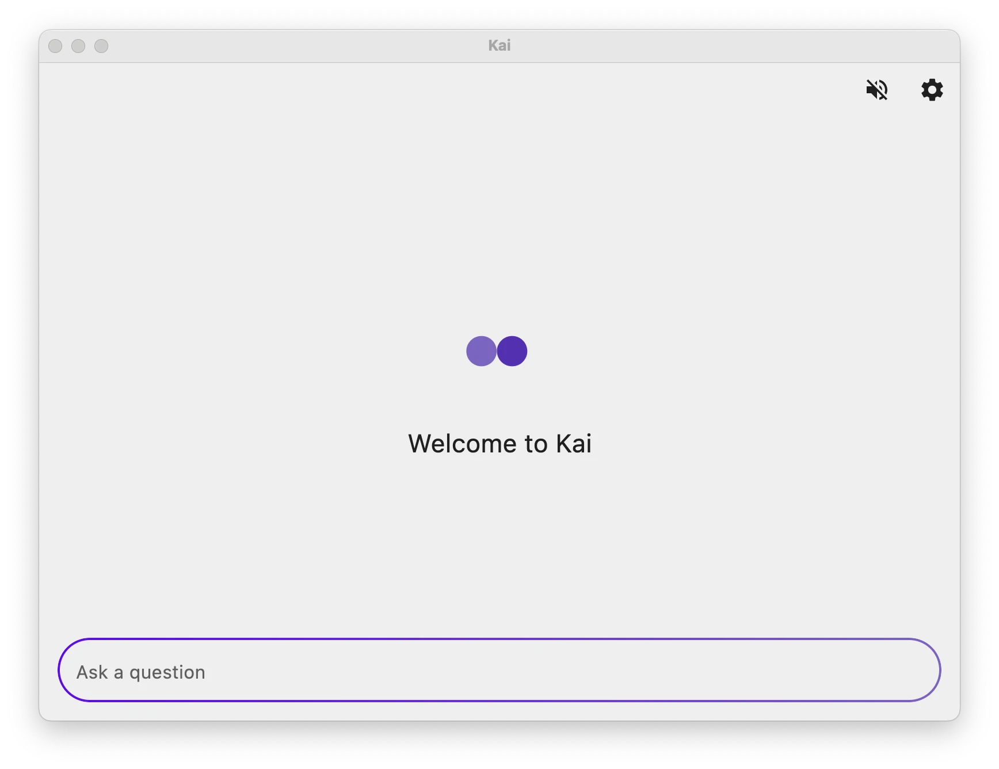

Kai 9000
Open Source AI That Builds Screens, Not Just Text
An open-source AI powerhouse that runs locally in your pocket. With persistent memory, a heartbeat, tool execution, and an interactive UI that generates full screens — not just chat bubbles.

What Makes Kai Different
A personal AI assistant that remembers, acts, and adapts — across every platform.
Persistent Memory
Kai remembers facts, preferences, and learnings across conversations. Frequently used memories get promoted into the system prompt automatically.
Customizable Soul
Define Kai's personality with an editable system prompt. Choose from presets like Short & Direct, Tutor, or Creative Writer — or write your own.
Autonomous Heartbeat
Kai runs periodic self-checks in the background — reviewing memories, pending tasks, and emails. If something needs attention, it notifies you.
AI Providers
OpenAI, Gemini, Anthropic, DeepSeek, Groq, Mistral, xAI, and more. Configure a fallback chain — Kai tries the next provider on failure.
Tool Execution
Web search, notifications, calendar events, shell commands, and alarms. Kai acts on your behalf, not just talks.
Run Gemma 4 Locally
Fully offline inference on Android & Desktop with Google Gemma 4 E2B / E4B. No API key, no cost, fully private. How it works →
MCP Servers
Connect to external tools via the Model Context Protocol. Fetch web content, query docs, check crypto prices, and more.
LaTeX Math Rendering
Fractions, integrals, matrices, and Greek letters — typeset natively on device. No MathJax, no WebView. See examples →
Linux Sandbox
On Android, Kai runs shell commands in a secure sandboxed Alpine Linux environment. Install packages, run Python, process data.
Open Source & Encrypted
Everything runs on your device — including on-device Gemma 4. Conversations are encrypted locally. No cloud accounts, no tracking, no data collection.
Available Everywhere
Android, iOS, Windows, Mac, Linux, and Web. Pick your platform.

brew install --cask simonschubert/tap/kai
winget install SimonSchubert.Kai
yay -S kai-bin